> 简体中文 · 面向完全不懂编程的普通用户
> 版本：0.1.0（2026-10-10 实测）· 本文所有截图均来自真实运行的产品
---
1. [Intelligence 是什么](#1-intelligence-是什么)
2. [第一次使用](#2-第一次使用)
3. [添加 YouTube 视频](#3-添加-youtube-视频)
4. [关注 YouTube 频道](#4-关注-youtube-频道)
5. [导入 Bilibili 视频](#5-导入-bilibili-视频)
6. [导入本地文件](#6-导入本地文件)
7. [查看 Content（内容）](#7-查看-content内容)
8. [查看字幕与摘要](#8-查看字幕与摘要)
9. [理解 Evidence（证据）](#9-理解-evidence证据)
10. [提炼 Intelligence（洞察）](#10-提炼-intelligence洞察)
11. [使用 Topic（主题）](#11-使用-topic主题)
12. [配置本地模型](#12-配置本地模型)
13. [配置云端模型](#13-配置云端模型)
14. [修改语言](#14-修改语言)
15. [备份与恢复](#15-备份与恢复)
16. [常见问题](#16-常见问题)
17. [当前已知限制](#17-当前已知限制)
---
Intelligence 是一个"本地优先"的个人智能知识工作台。它帮助你：
它的四个核心概念：
| 概念 | 作用 | 通俗解释 |
|---|---|---|
| Following（关注） | 持续关注的信息来源 | 就像订阅一个频道 |
| Content（内容） | 采集、转写、摘要和证据 | 整理好的素材库 |
| Intelligence（洞察） | 从内容中提炼的长期价值 | 值得记住的结论 |
| Topic（主题） | 围绕主题积累认知 | 按主题归档洞察 |
产品原则：
最重要的承诺：证据始终可追溯。 每一条内容、每一个摘要、每一条洞察，都能找到它来自哪段原始材料。
---
第一次打开 Intelligence，你会看到三步引导，说明这个工具的核心用途。
第 1 步：欢迎与定位
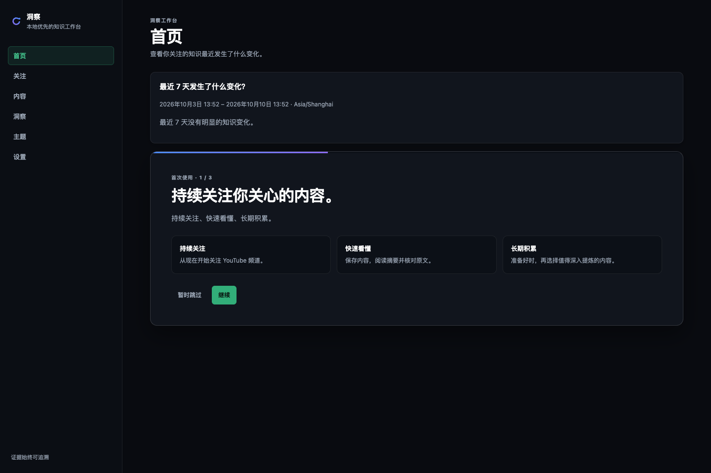
页面上说明了这是一款"本地优先的知识工作台"，点击 继续 进入下一步。
第 2 步：理解"关注 → 内容 → 洞察"
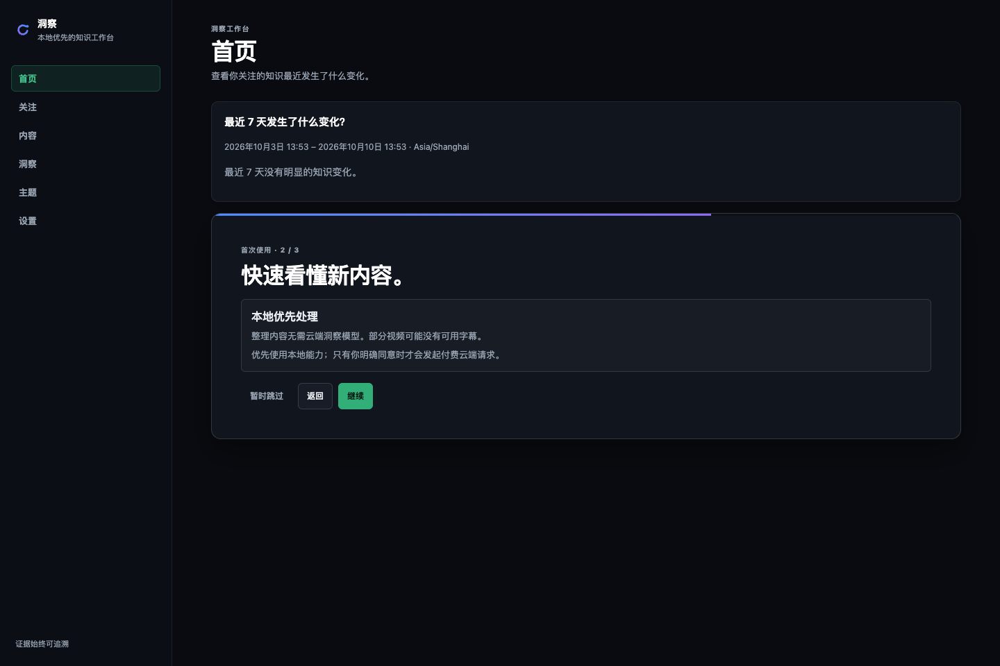
第 3 步：了解"证据始终可追溯"
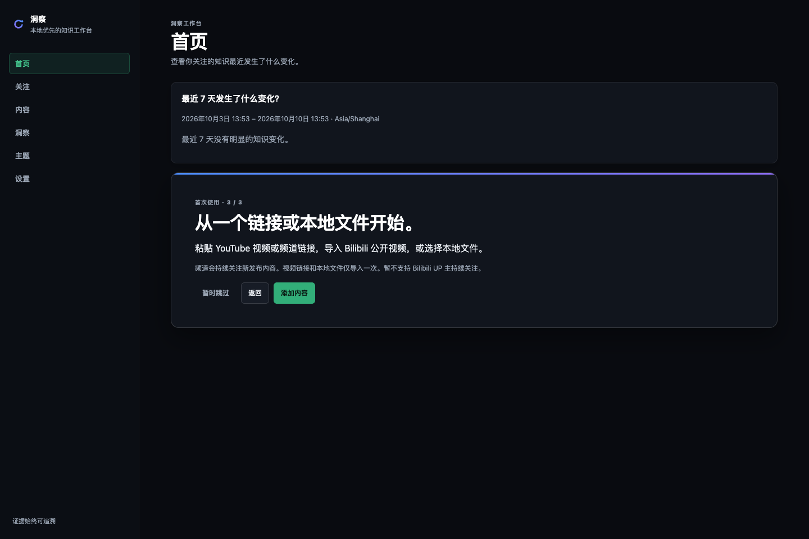
完成引导
点击 添加内容 完成引导，进入"关注"页面。
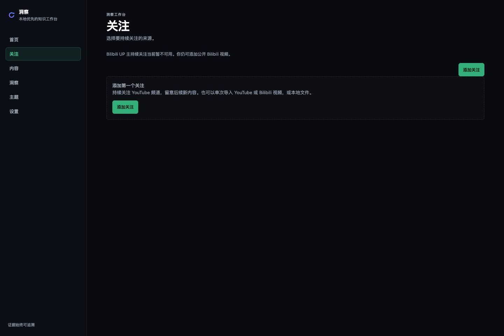
此时页面还是空的，提示你"选择要持续关注的来源"。左侧是导航栏：
| 导航 | 功能 |
|---|---|
| 首页 | 最近 7 天你关注的知识发生了什么变化 |
| 关注 | 管理你持续关注的来源 |
| 内容 | 阅读已采集的内容、字幕与处理记录 |
| 洞察 | 查看提炼出的长期洞察 |
| 主题 | 按主题归档和浏览洞察 |
| 设置 | 语言、兴趣、模型、备份等 |
重新打开后的状态：关闭浏览器再打开，你的关注、内容、设置都会保留（数据保存在本机）。
> 说明：本手册演示环境已添加了示例关注与内容；你首次使用时会看到类似的空状态页面。
---
可以单次导入一条 YouTube 视频，不关注频道。
操作步骤：
1. 点击右上角 添加关注（或关注页的 添加关注 按钮），打开添加对话框。
2. 在输入框中粘贴 YouTube 视频链接，例如：
https://www.youtube.com/watch?v=aircAruvnKk
3. 系统会识别链接并显示视频信息（标题、频道）。
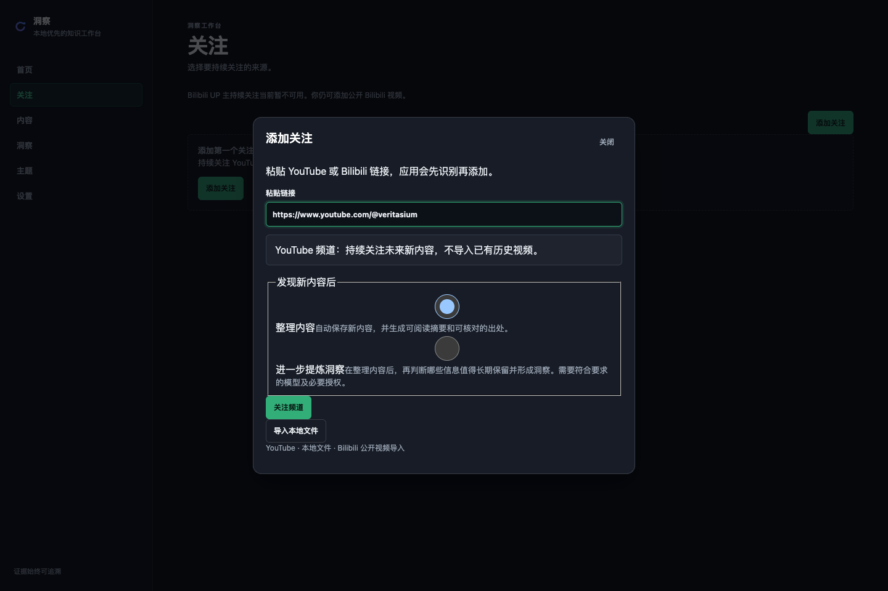
4. 点击 添加 确认导入。导入成功后，内容会自动进入后台处理（获取字幕、生成摘要）。
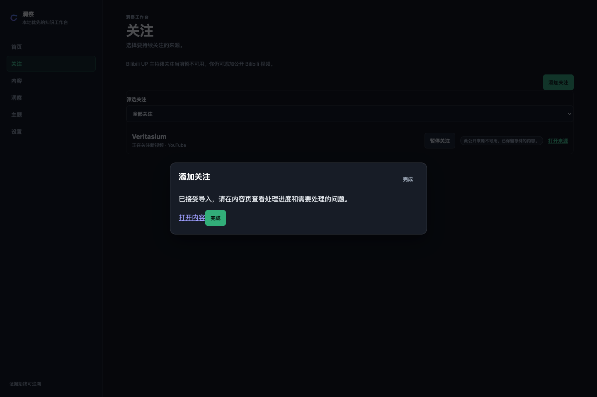
预期结果：
---
持续关注一个频道，之后自动检查该频道的新视频。
操作步骤：
1. 打开 添加关注 对话框，粘贴 YouTube 频道主页链接，例如：
https://www.youtube.com/@Veritasium
2. 系统识别出频道名称。
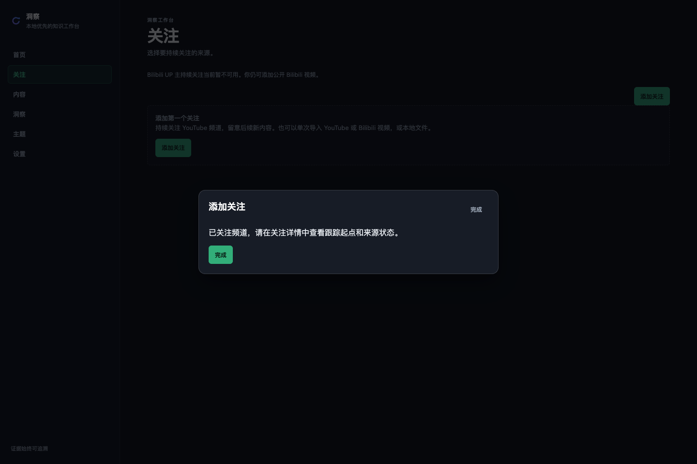
3. 点击 添加，频道出现在"关注"列表，状态为"正在关注新视频 · YouTube"。
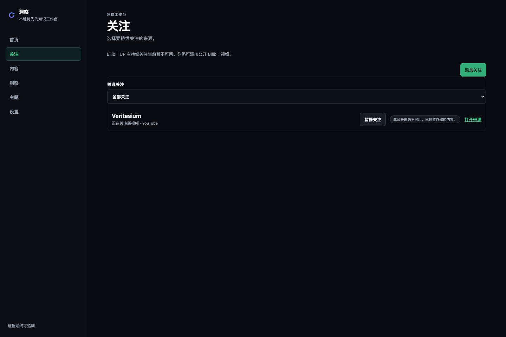
关注后的操作：
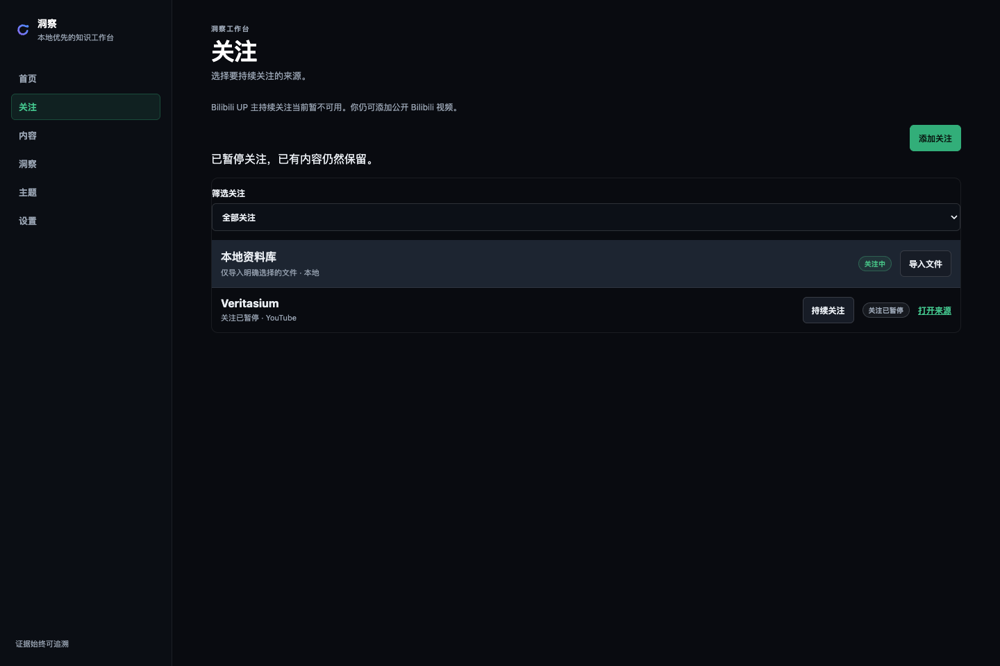
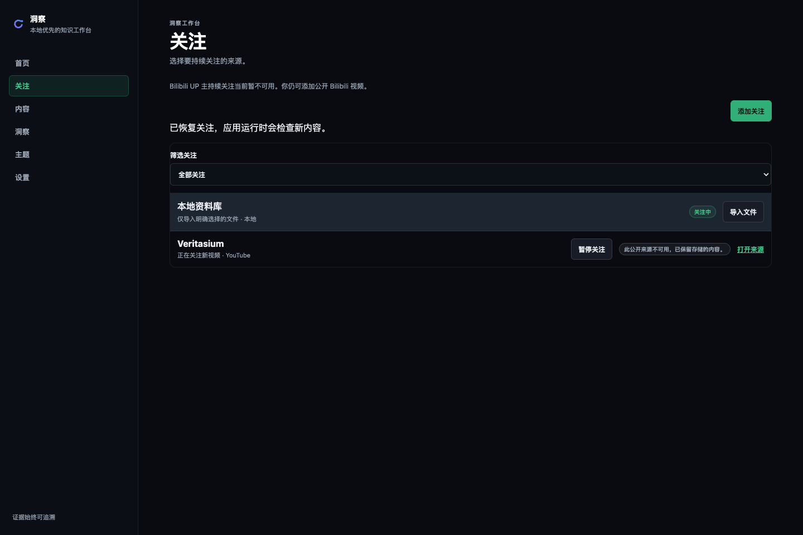
自动检查：应用会定期自动检查已关注的频道是否有新视频（也可以点击页面上的"检查更新"立即检查）。
> 提示：如果某个公开来源暂时不可访问，页面会如实提示"此公开来源不可用，已保留存储的内容"，不会删除你已有的内容。
---
可以单次导入一条公开的 Bilibili 视频。
操作步骤：
1. 打开 添加关注 对话框，粘贴 Bilibili 视频链接，例如：
https://www.bilibili.com/video/BV1GJ411x7h7
2. 点击 添加 导入。
预期结果：
> 注意：当前版本不支持持续关注 Bilibili UP 主（添加对话框中有明确提示）。你可以添加公开 Bilibili 视频，但无法自动跟踪 UP 主的新视频。
> 本手册撰写时，部分 Bilibili 视频的字幕获取受源站限制，导入后可能显示"字幕不可用"。
---
可以导入本机的文本、音频或视频文件。
支持的格式：
.txt、.md（Markdown）.m4a 等常见格式.mp4 等常见格式操作步骤：
1. 在 关注 页面找到 本地资料库，点击 导入文件。
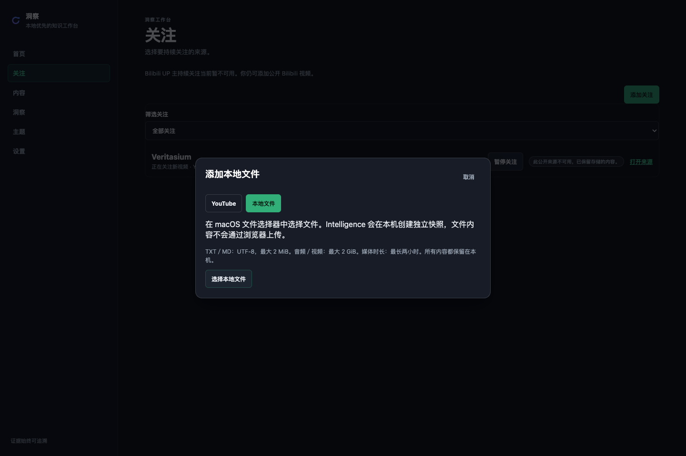
2. 系统打开系统的文件选择窗口（Native File Picker），选择你的文件。
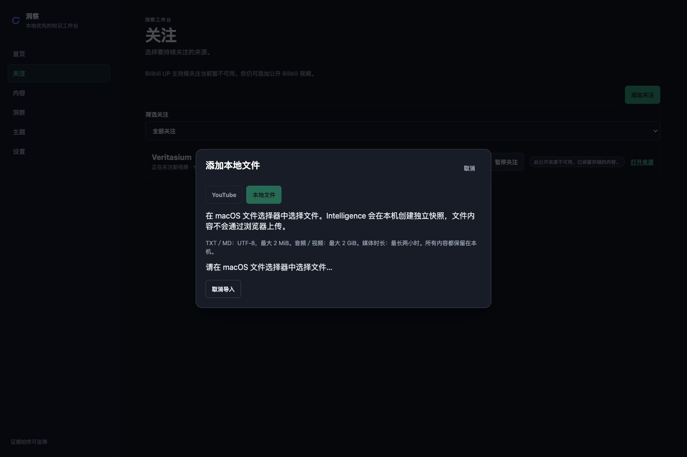
对话框中说明了文件格式与大小限制：TXT/MD 最大 2 MiB，音频/视频最大 2 GiB，媒体时长最长两小时。选择不支持的文件时，系统会显示明确的错误提示并拒绝导入。
导入后的状态：
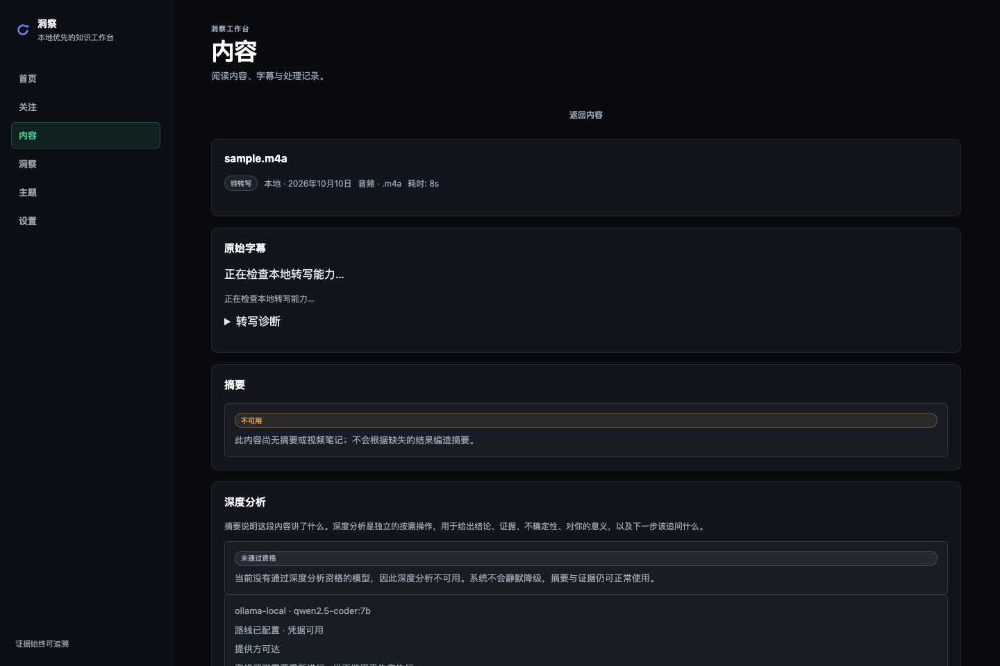
> 注意：本地转写依赖一个约 1.6 GB 的语音识别模型。如果模型尚未配置，音频/视频会保持"待转写"状态，页面会如实说明"正在检查本地转写能力"与原因，不会假装已经转写成功。
大文件：导入有明确的大小上限（文本与媒体文件各有上限），超过限制会拒绝并提示。
---
所有采集到的内容都汇总在 内容 页面。
列表：每条内容显示标题、来源（频道/本地文件）、时间和处理状态。
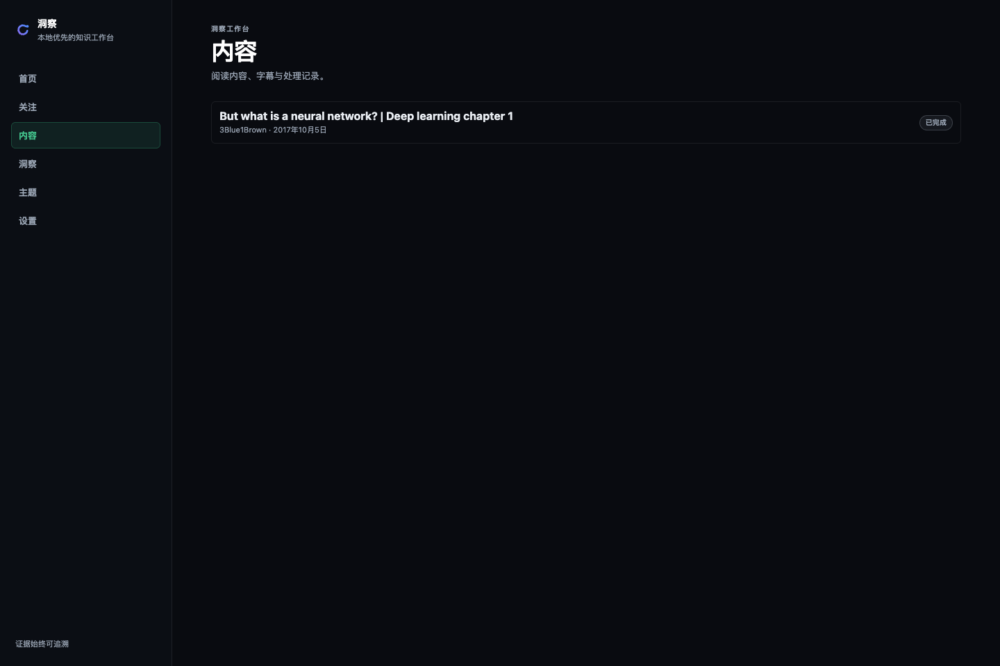
处理状态说明：
| 状态 | 含义 |
|---|---|
| 已完成 | 字幕与摘要已整理完成 |
| 待转写 | 音频/视频正在等待转写（或转写能力不可用） |
| 字幕不可用 | 源没有可用字幕，如实提示 |
| 处理中 | 正在获取字幕或生成摘要 |
打开详情：点击任意内容条目，进入详情页。
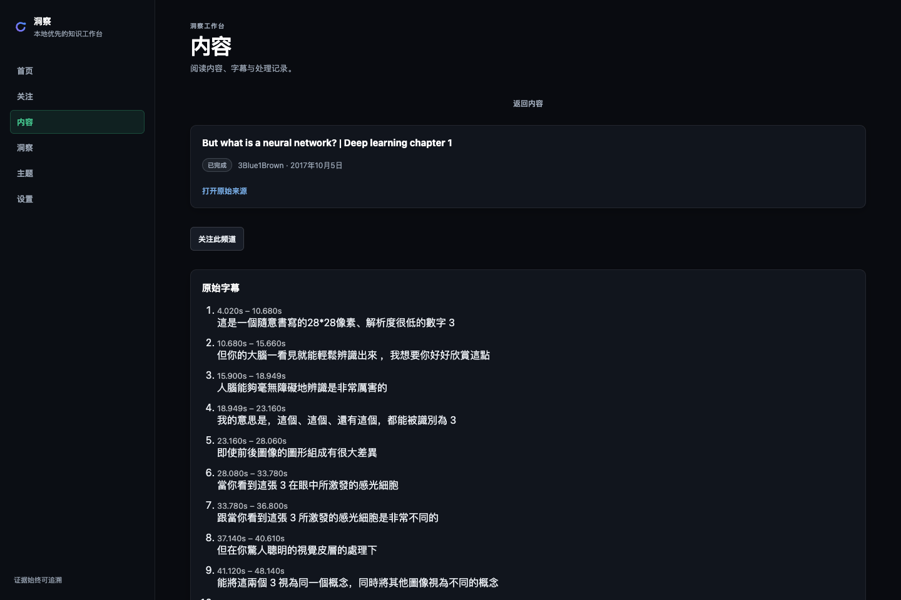
详情页包含：视频信息（标题、频道、发布时间）、打开原始来源 链接、关注此频道 快捷入口、原始字幕、来源位置/溯源信息（证据）等。
---
在内容详情页可以查看原始字幕与摘要。
原始字幕：逐段显示带时间戳的字幕文本，对应视频的具体时间段。

来源位置与溯源信息：每段字幕都标明它在视频中的时间位置，并显示对应的证据文件哈希与日期——这就是"证据始终可追溯"的体现。
摘要：系统基于字幕整理的结构化摘要（关键点）。如果内容没有字幕或尚未整理完成，摘要区域会如实显示"不可用"，并说明"此内容尚无摘要或视频笔记；不会根据缺失的结果编造摘要"。
处理记录：详情页底部显示该内容的处理历史（例如"原始字幕：已完成""来源信息：已完成"）。
---
Evidence（证据）是 Intelligence 的核心信任机制：任何结论都能追溯到原始材料。
在内容详情页，你会看到：
16:53-18:26）；
证据的意义：
---
在内容详情页的"洞察处理结果"区域，可以手动触发提炼：点击 提炼为洞察。
处理过程：系统使用你配置的本地模型分析内容与证据，判断是否有值得长期保留的新洞察。
两种结果：
1. 发现新洞察：生成洞察条目，可在 洞察 页面查看，并关联到主题。
2. 无新洞察：如实显示"已完成，未产生新洞察"——说明分析已完成，但本次内容没有形成值得长期保留的新结论。
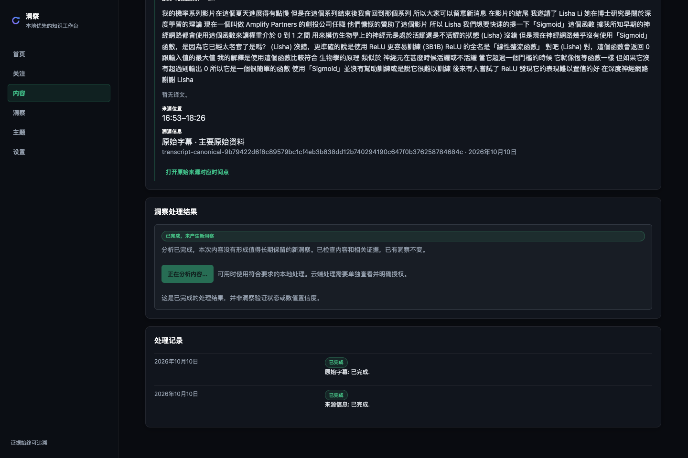
洞察页面：所有提炼出的洞察汇总在这里。
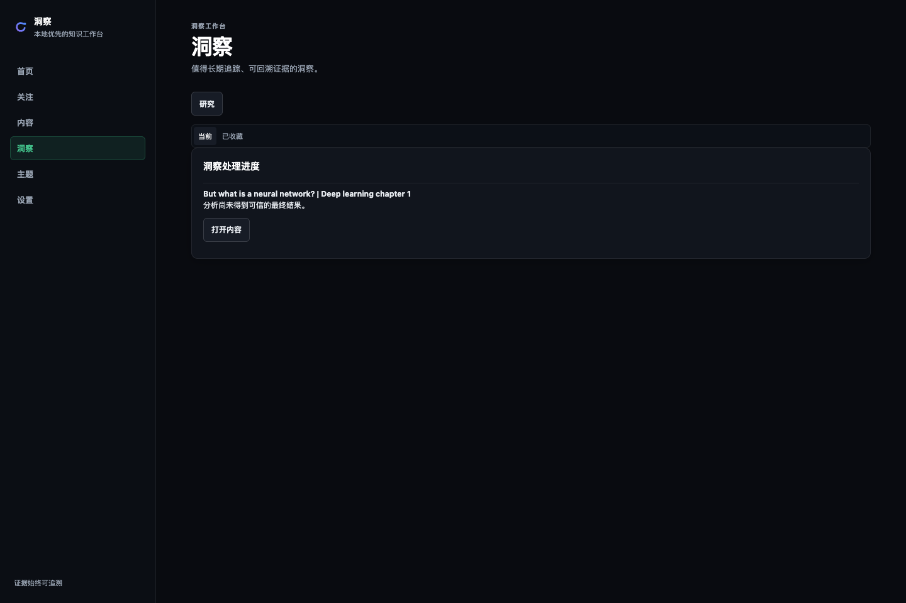
洞察处理进度：如果内容正在分析，洞察页面会显示"分析尚未得到可信的最终结果"，可点击"打开内容"回到详情页查看。
> 提示：提炼洞察是可选操作。不提炼也不影响内容整理。未配置合格模型时，页面会明确提示"云端洞察需要配置凭据并授权"，不会偷偷使用付费服务。
---
主题用于把洞察按主题归档，持续积累认知。
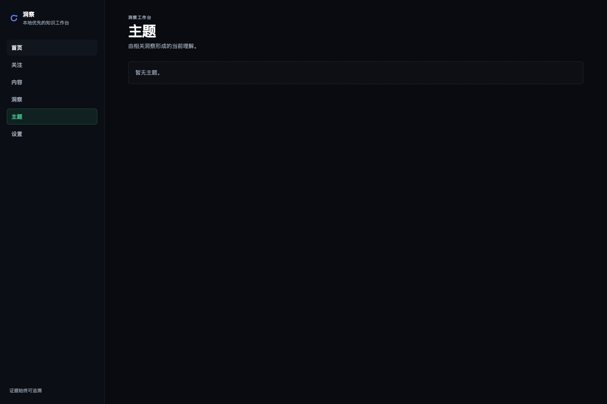
> 说明：主题关联的是已提炼的洞察。在产生第一条洞察之前，主题页面会保持空状态，这是正常现象。本手册撰写时演示环境尚未产生可关联的洞察，因此主题详情暂以空状态呈现。
---
Intelligence 默认使用本地模型完成内容整理与洞察提炼，你的数据不出本机。
查看当前模型：打开 设置 → 模型与处理准备。
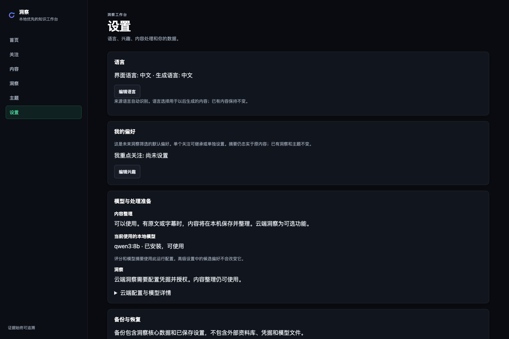
当前使用的本地模型区域显示：
qwen3:8b）；配置要求：
在设置页的"模型与处理准备"中展开"云端配置与模型详情"，可以看到模型连接状态与可用模型列表（只读）。
> 提示：安装本地模型需要一定的技术准备（安装 Ollama 并拉取指定模型）。对于不想配置模型的用户，核心的内容整理功能依然可用；只有"提炼洞察"等模型功能会提示不可用。
---
云端模型是可选能力，用于更高质量的洞察提炼。
在设置页的"洞察"区域，当前状态会明确说明：
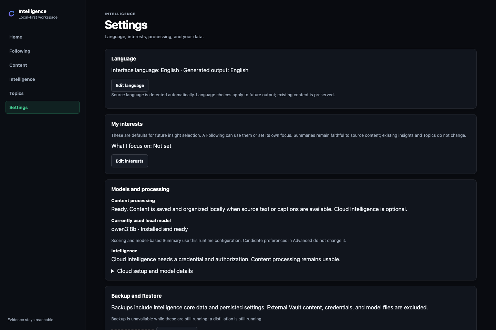
使用规则：
> 本手册撰写时，演示环境未配置云端凭据，因此云端洞察显示"需要配置凭据并授权"是正常的诚实反馈。
---
可以修改界面语言与生成内容的语言（中文或英文）。
操作步骤：
1. 打开 设置 页面，找到 语言 区域。
2. 点击 编辑语言。
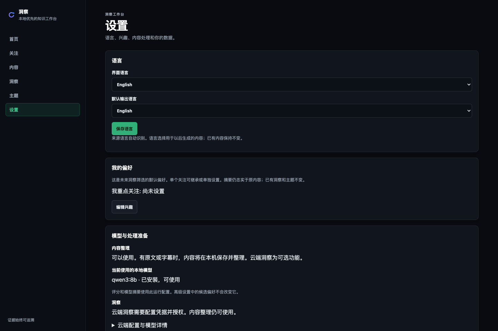
3. 选择 界面语言 与 默认输出语言（默认输出语言影响以后生成的摘要/洞察的语言）。
4. 点击 保存语言。
切换为英文后的设置页：
切回中文：再次点击 编辑语言（Edit language），选择中文并保存。
说明：
---
备份内容：备份包含洞察核心数据与已保存设置；不包含外部资料库、凭据和模型文件。
创建备份：
1. 打开 设置 → 备份与恢复。
2. 点击 创建备份，系统生成一个备份文件（.zip），列出备份中的内容统计（关注数、内容数、证据数等）。
备份前检查：如果有内容正在处理（例如提炼任务仍在执行），页面会提示"以下工作尚未结束，暂时无法备份"，等处理完成后即可备份。这是为了保证备份数据的一致性。
选择备份（恢复）：点击 选择备份 可从备份文件恢复数据。恢复完成后需要重新打开应用。
> 说明：本手册撰写时，演示环境已完成一次真实备份（372 KB，含 3 个关注、5 条内容、20 条证据）。恢复流程的界面与创建备份在同一区域。
---
Q1：我的数据存在哪里？
A：默认保存在你本机的数据目录中（本地优先）。凭据值永远不会被显示。
Q2：添加的视频一直没有字幕/摘要？
A：检查内容详情页的状态提示。如果显示"字幕不可用"或"待转写"，说明源没有可用字幕，或本地转写模型尚未配置。系统不会编造内容，这是如实反馈。
Q3：点击"提炼为洞察"后一直显示处理中？
A：提炼需要本地模型参与。如果模型未就绪，会显示等待状态；请检查设置中的"当前使用的本地模型"是否"已安装，可使用"。云端洞察则需要先配置凭据并逐次授权。
Q4：浏览器后退/前进按钮没有反应？
A：旧版本存在此问题，本手册对应版本已修复：点击浏览器后退/前进按钮，或直接在地址栏修改 # 后的路径，都会正确切换页面。
Q5：为什么不能持续关注 Bilibili UP 主？
A：当前版本暂不支持 Bilibili UP 主持续关注，但可以单次导入公开 Bilibili 视频。这是当前已知限制，界面中有明确提示。
Q6：如何修改语言？
A：设置 → 语言 → 编辑语言，选择界面语言与输出语言并保存。
Q7：备份时提示"暂时无法备份"？
A：说明有内容正在处理（如提炼任务执行中）。等处理完成后再创建备份即可。
Q8：可以删除内容吗？
A：当前版本的内容管理与处理记录聚焦于采集、整理与提炼。请在设置与界面中查看可用的管理操作；本文档对应的体验版本以添加、关注、整理、提炼为主。
---
以下是本手册撰写时（2026-10-10）实测发现的限制，均如实记录：
| 限制 | 表现 | 说明 |
|---|---|---|
| 本地音频/视频转写依赖模型 | 导入的音频/视频显示"待转写" | 需要约 1.6 GB 的本地语音识别模型（mlx-whisper）。模型未配置时，转写能力检查会如实报告"暂不可用" |
| Bilibili 字幕可能不可用 | 导入的 Bilibili 视频显示"字幕不可用" | 部分 Bilibili 视频无公开网页字幕，或受源站访问限制 |
| Bilibili UP 主持续关注暂不可用 | 添加对话框明确提示 | 当前版本支持单次导入公开 Bilibili 视频，不支持持续关注 UP 主 |
| 云端洞察需要凭据与逐次授权 | 设置页明确提示"需要配置凭据并授权" | 产品原则：不自动调用付费云模型 |
| 2 GiB 大文件导入未实测 | — | 本手册撰写环境的磁盘空间不足以生成 2 GiB 测试文件；导入存在明确的文件大小上限 |
| 主题需先有洞察 | 主题页面为空 | 主题归档的是已提炼的洞察；产生第一条洞察前主题为空是正常现象 |
| 转写与提炼需要模型就绪 | 状态提示"等待模型/转写能力检查中" | 模型未就绪时系统如实提示，不会静默降级 |
---
本手册所有截图均来自真实运行的产品（隔离测试环境，与正式数据完全隔离）：
http://127.0.0.1:5588/（测试实例）http://127.0.0.1:5589/（测试实例）验证级别说明：
详细的产品体验报告、问题清单与修复记录见同一目录下的：
EXPLORATION_REPORT.md（完整产品体验报告）ISSUES_FOUND.md（发现的问题、修复与验证证据）UNRESOLVED_ISSUES.md（尚未解决的问题）FINAL_REPORT.md（最终交付报告）